Savourez l'âme de l'Afrique
Découvrez des plats créatifs et généreux, préparés avec des ingrédients locaux et un savoir-faire authentique.
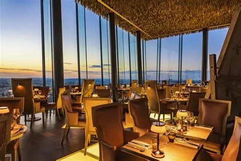
Une expérience culinaire unique
Le Baobab Gourmand vous invite à découvrir les saveurs authentiques de l'Afrique, réinterprétées avec créativité et finesse. Nos plats racontent l'histoire d'un continent riche en traditions culinaires, servis dans un cadre chaleureux et moderne.
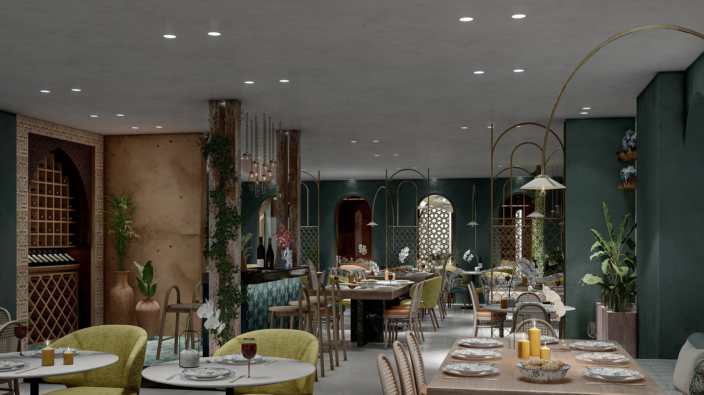
Plats Signatures
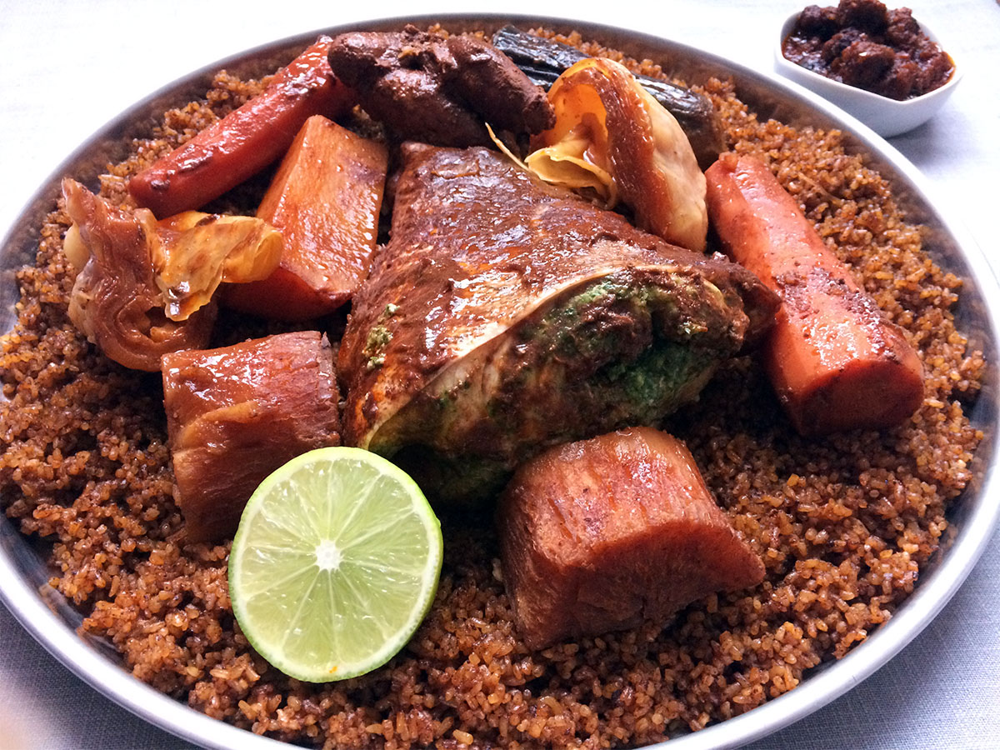
Thiéboudienne Royal
Le plat national sénégalais revisité avec des poissons nobles et des légumes de saison
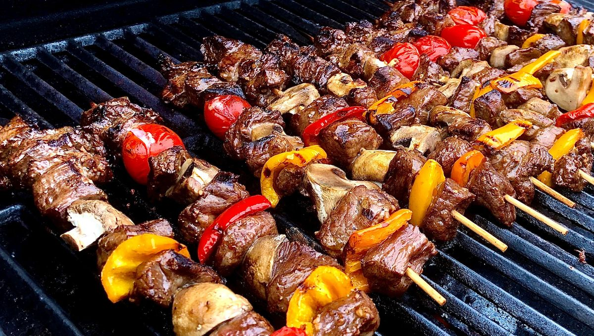
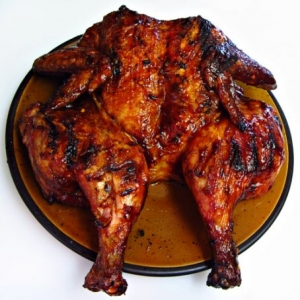
Viande & Poulet grillée
C'est une préparation culinaire consistant à saisir une pièce de boucherie à feu
pour obtenir une croûte savoureuse tout en préservant un cœur tendre et juteux.

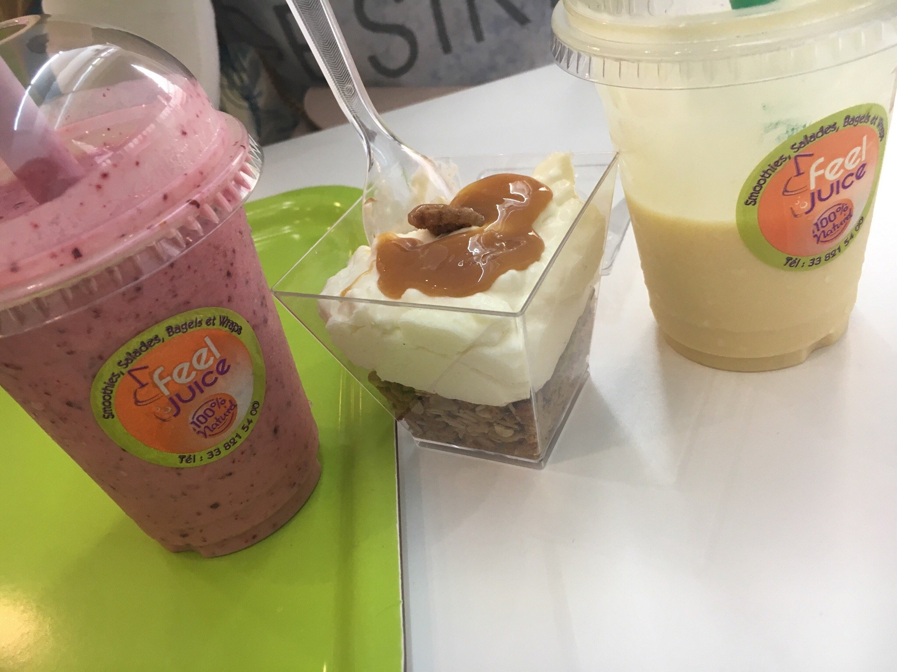
Desserts somptueux
Les desserts apportent une note finale indispensable au repas,
jouant des rôles nutritionnels, psychologiques et sociaux.
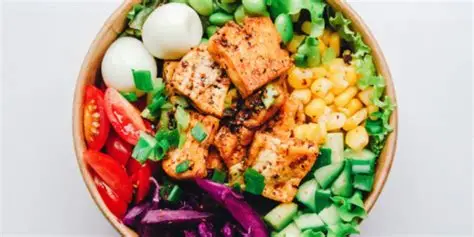
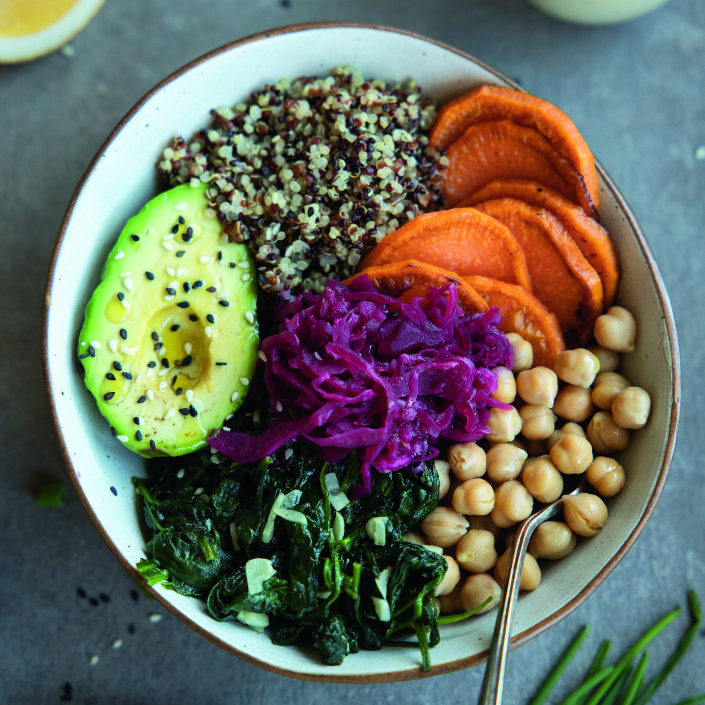
Buddha bowl
un plat végétarien ou végétalien servi dans un bol,
composé d’une combinaison équilibrée
d’ingrédients crus et cuits.
Nos Coups de Cœur
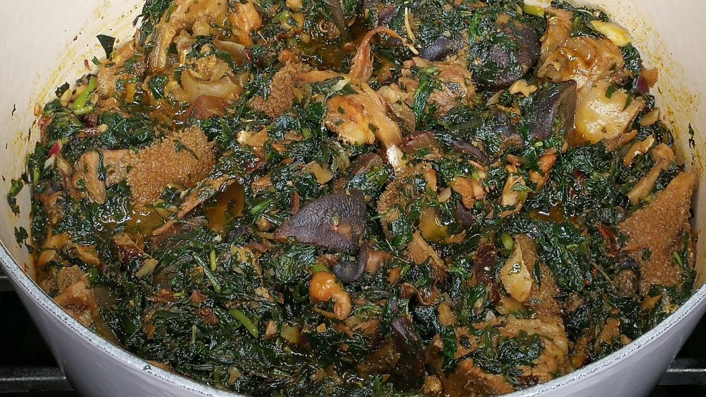
Edikang ikong
L'edikang ikong est une soupe de légumes à base d' ikong ubong , originaire des peuples Efik de l'État de Cross River et Ibibio de l'État d'Akwa Ibom au Nigéria. Considérée comme un mets de choix par certains Nigérians, elle est parfois servie lors d'occasions importantes.
Buddha bowl
le Buddha bowl est un plat végétarien ou végétalien servi dans un bol, composé d’une combinaison équilibrée d’ingrédients crus et cuits. Il contient généralement une base de céréales (comme le riz ou le quinoa), des légumes variés, des légumineuses ou une source de protéines (tofu, œufs), et parfois des sauces ou toppings. C’est un plat sain, coloré et personnalisable, adapté aux saisons et aux goûts de chacun.
Ceebu jen
Le ceebu jën (ou thiéboudiène) est le plat national du Sénégal, originaire de Saint-Louis. Il se compose principalement de riz, de poisson frais (ou séché), de légumes (carottes, choux, manioc, aubergines) et de concentré de tomate, le tout mijoté avec des épices. Inscrit au patrimoine immatériel de l'UNESCO, il incarne la « Téranga » (hospitalité) sénégalaise et se partage souvent dans un grand plat commun.
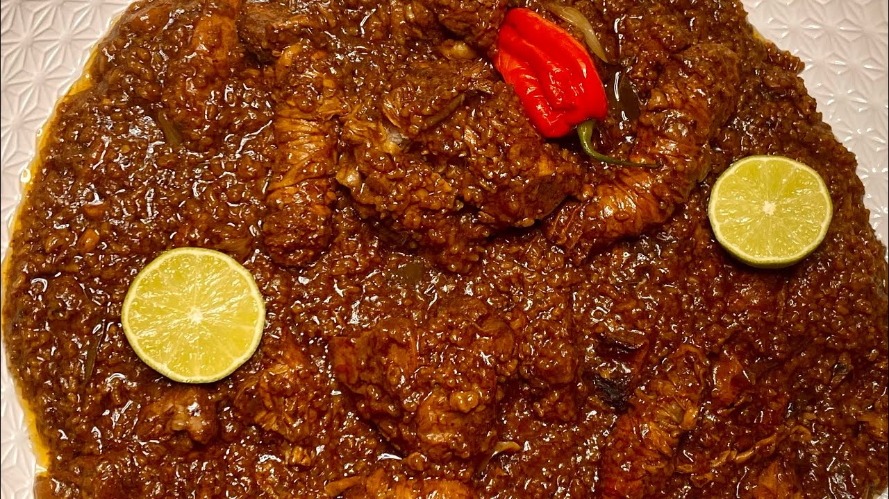
Mbaxal
Le mbaxal est un plat traditionnel sénégalais à base de riz,
caractérisé par une texture fondante et onctueuse (proche du risotto).
Il se décline en deux versions principales :
Mbaxalou Saloum : La version la plus célèbre, cuisinée avec de la poudre d'arachide,
des fruits de mer séchés (yokhoss, pagne) et du niébé (haricots). C'est un plat riche au goût de noisette.
Mbaxalou Puc-paac: Une variante à la viande, très parfumée et relevée,
où le riz est volontairement très cuit et moelleux.
L'essentiel : C'est un plat rustique, généreux en condiments traditionnels (nététou, yët),
qui privilégie la saveur profonde des produits du terroir.
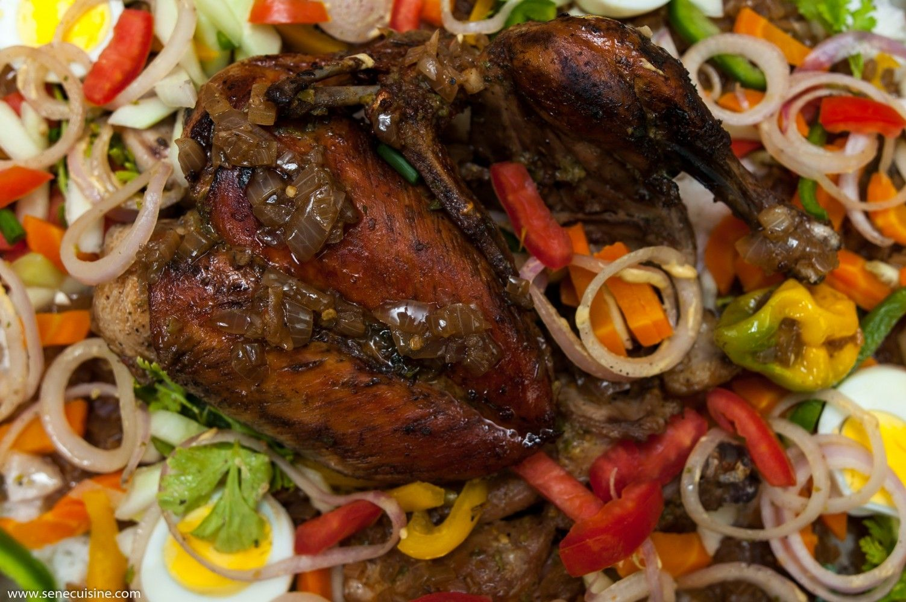
Yassa
Le Yassa est un plat sénégalais emblématique, originaire de Casamance,
célèbre pour sa saveur acidulée et pimentée.
Voici l'essentiel à retenir :
Le concept : Un confit d'oignons caramélisés,
généreusement relevé au citron et à la moutarde.
Les variantes : Se prépare principalement au poulet (Yassa Ginar)
ou au poisson (Yassa Jën).
La technique : La viande ou le poisson est mariné,
puis grillé avant d'être mijoté dans la sauce aux oignons.
L'accompagnement : Se sert toujours avec
du riz blanc nature (riz basmati ou riz cassé).
C'est un plat vif, savoureux et plus
simple à réaliser que le ceebu jën.
Ce qu'ils en disent
"Une expérience culinaire exceptionnelle ! Le Thiéboudienne est le meilleur que j'ai goûté à Touba. L'ambiance est chaleureuse et le service impeccable."
Halimatou KOUROUMA
Ingénieur en cybersecurité"L'edikang ikong est un pur délice. Les saveurs sont parfaitement équilibrées. Je recommande vivement à tous les amoureux de la cuisine africaine."
Serigne Amsatou DIAKHATE
Blogueur & Specialiste de la cuisine africaine"Cadre magnifique, cuisine raffinée et personnel adorable. Le Baobab Gourmand est devenu notre restaurant préféré pour les occasions spéciales."
Lotha DIOP
Architecte d'intérieur"J’ai passé un excellent moment au Baobab Gourmand ! Le cadre est agréable et l’ambiance très conviviale. Les plats sont vraiment délicieux, bien présentés et préparés avec soin. "Le personnel est accueillant et toujours disponible, ce qui rend l’expérience encore plus agréable. C’est l’endroit idéal pour déjeuner ou dîner tranquillement. Je recommande vivement !"